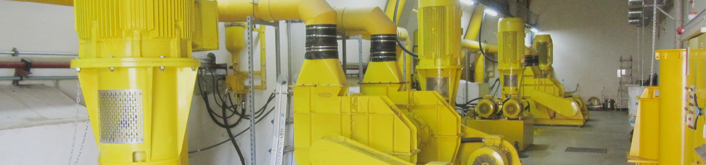
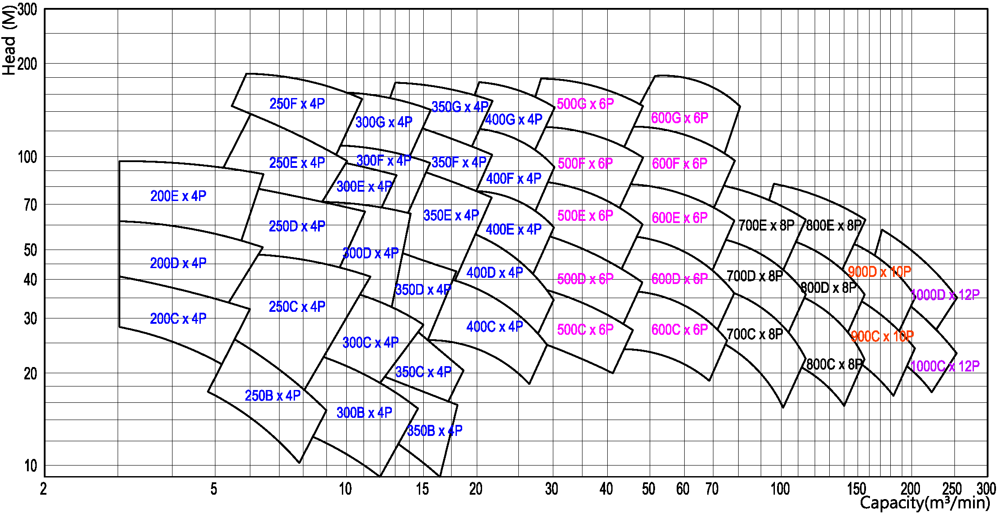

-
용도 및 적용 분야
- 청수, 해수, 원유, 펄프수, 정유 중간 공정 제품 등의 펌핑용에 사용된다.
- 급수 플랜트, 정유, 제지 펄프 공업, 제철, 관개, 파이프 라인, 스테이션, 탱크장, 발전소 등
- 순환, 보조수, 배수, 급수, 발라스트 G/S 등 용도로 사용된다.
-
설계 및 구조적 특성
- 넓은 사용영역에 걸쳐 효율이 높고, 운전이 정숙하며, 고장이 적다.
-
- 케이싱 상하 분할형으로 정비 작업이 용이하다.
- 플랜지는 흡토출 공히 KS 또는 JIS10 ~ 16g/cm³급, FF이다.
- 동평형 및 수력 평형된 임펠러
- Fan type 임펠러 장착 기능. (option)
- 충분한 크기의 볼베어링을 사용하며, 그리스 윤활 방식을 표준으로 한다.
- 오일 윤활도 가능
- 베어링 하우징은 케이싱에 플랜지 붙임하고, 핀으로 위치를 고정시켜 정밀한 재심내기가 가능하다.
- 주축의 베어링간 거리를 짧게 하여 휨을 적게 하였다.
- 무냉각 스터핑 박스 팩킹링이 표준. 미케니칼 씨일 방식도 가능
- 상하면을 기계가공한, 용접 구조의 강제 베이스 플레이트
- 부품의 정밀 가공
운전 테이터 사양
- 사용 유량 : 3 m³/min ~ 300 m³/min
- 사용 양정 : 8 m ~ 190 m
- 흡입 구경 : ø200 mm ~ ø1300 mm
- 회전 방향 : CW (구동측에서 펌프를 바라보았을 때 우회전)
성능 곡선도 (Performance Curve)
